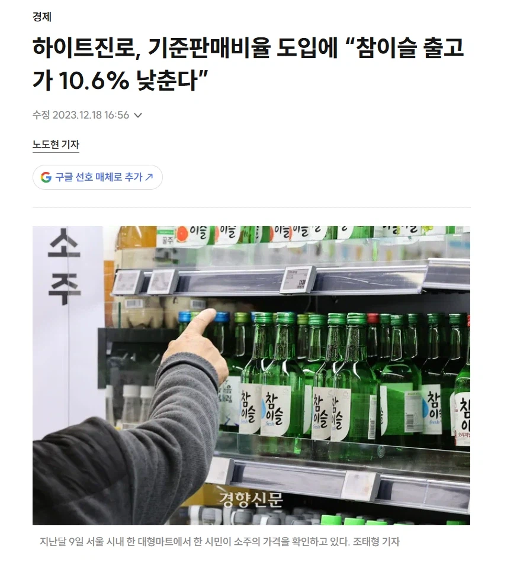
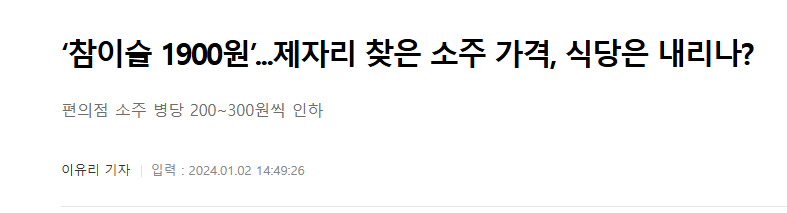
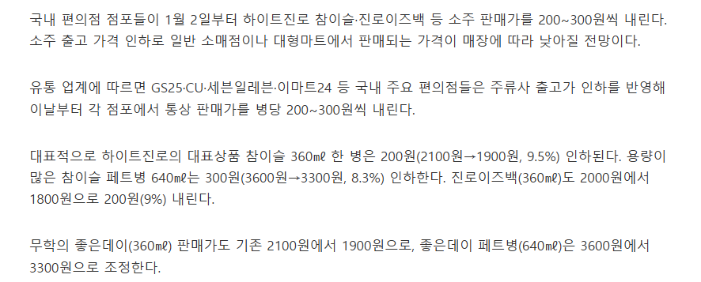
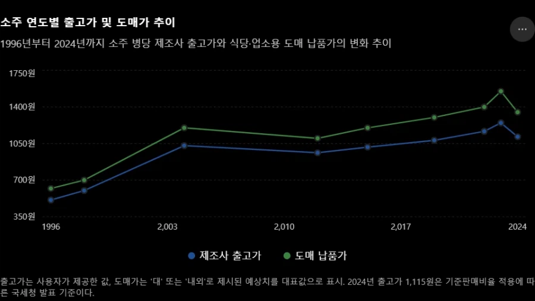

정작 소주 출고가는 기준판매비율 도입으로 10% 깎여서 도매 납품가는 2020년 수준으로 돌아감
16~18년도에 편의점에서 해외맥주 4캔에 10000원이었고 지금은 11000~12000원함
같은 기간 동안 술집 소주는 3000원에서 6000원이 됨




정작 소주 출고가는 기준판매비율 도입으로 10% 깎여서 도매 납품가는 2020년 수준으로 돌아감
16~18년도에 편의점에서 해외맥주 4캔에 10000원이었고 지금은 11000~12000원함
같은 기간 동안 술집 소주는 3000원에서 6000원이 됨
댓글
수집 당시 댓글 7개
marlboro · 13 분 전
사실상 그동안 가게들이 그냥 소주값 올려야지만 됬는데 눈치만 본거에 가까움
IllIIIllllIl · 50 분 전
애초에 소주는 식당에서만 먹는건데 출고가가 어쩌고 해봐야 식당가가 비싸면 답없음 와인 위스키는 집에서 더 많이 먹는 술이고
럭비보더 · 35 분 전
소주는 줄고 수입주류 늘어난거 아닐까?
울산돌고래김낙영 · 30 분 전
걍 코로나 이후로 소비행태 바꼇고 이때 술 이윤 줄어드니까 원료물가 오른척 판가 ㅈㄴ 높여서 매출 유지하려다가 술소비 ㅈ박아서 이제야 깨갱하는걸로 밖에 안보이는데 ㅋㅋㅋ
죽은빈라덴 · 17 분 전
생맥이 한잔에 오천원인데 오백캔이 그 절반가격이니 밖에서 술을 안먹지....
Jabberwocky · 2 분 전
이제 소주 할저씨들밖에 안먹는데
개똥철학자 · 1 분 전
소주 2500원하는 집에 가서 술마시면서 사장이랑 이런저런 이야기해 봣었는데 2500원에 팔면 200원 남는다고하던데 그게 사실인지 아닌지는 몰?루